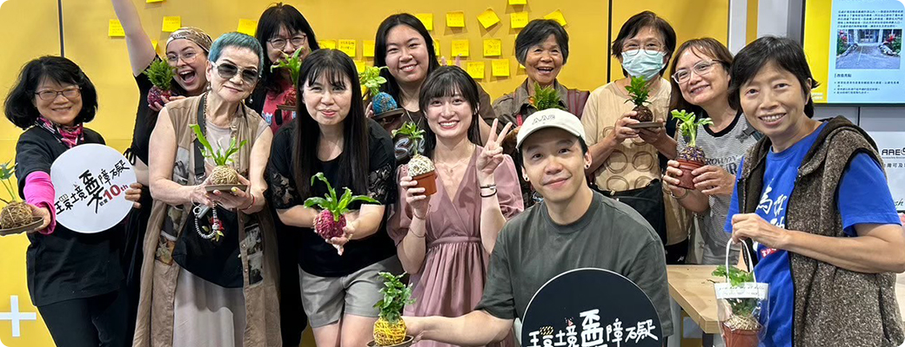
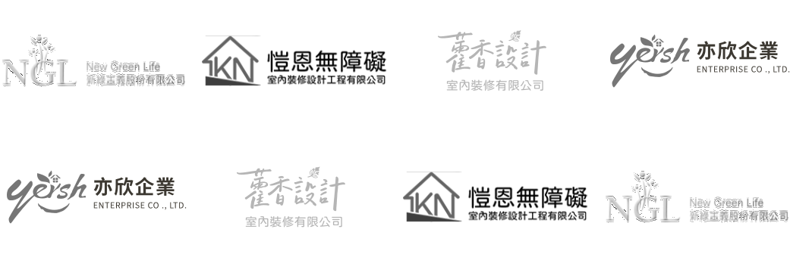
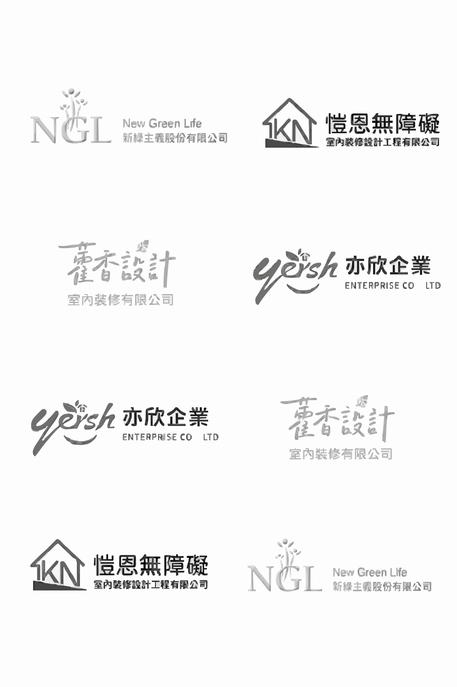

首頁

我要改善環境
從居家到公共空間，我們提供專業的檢測與改善服務，讓每個人都能安心使用。
我想邀約演講
邀請我們的專業講師到現場分享，讓更多人了解『可及設計』的理念與實踐。
我想參加活動
參加課程、工作坊、講座或參展，親身理解『可及設計』，和大家一起學習、分享。
認識我們
每一步努力，都是為了讓環境更友善
了解協會的使命與推廣行動，認識我們如何從環境到數位，持續推動可及的未來。
推廣行動
我們正在努力的方向
從居家改善到社區推廣，AAEDT 積極推動不同計畫，
讓可及設計更貼近生活。

贊助我們
支持協會，讓改變發生。改善環境需要每一份力量。捐款、志工或合作提案，都是推動可及設計的重要支持。
本會帳號： 國泰世華銀行台中分行(代碼：013)
帳號：006-03-500889-4
戶名：台灣可及環境設計協會張華蓀
帳號：006-03-500889-4
戶名：台灣可及環境設計協會張華蓀
媒體專區
我是影片說明我是影片說明我是影片說明我是影片說明我是影片說明我是影片說明我是影片說明我是影片說明
合作夥伴

